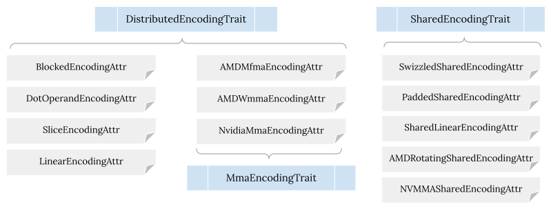
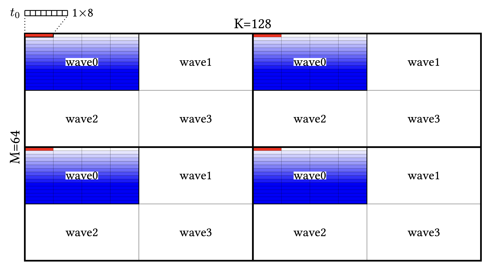
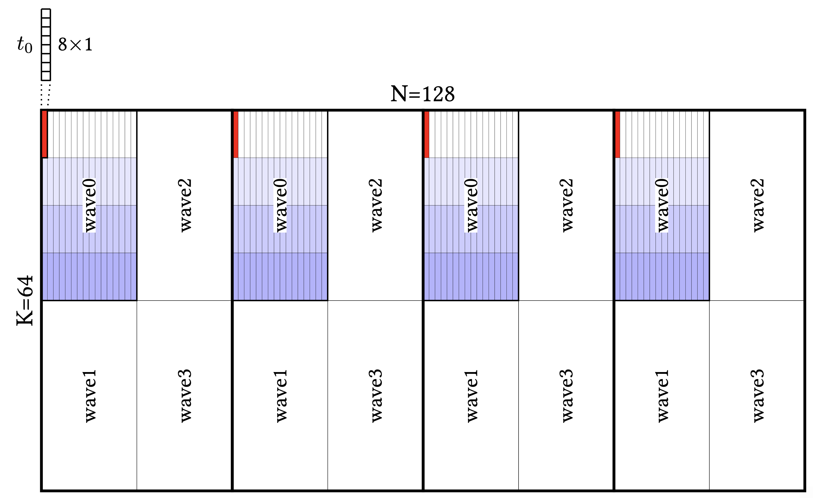
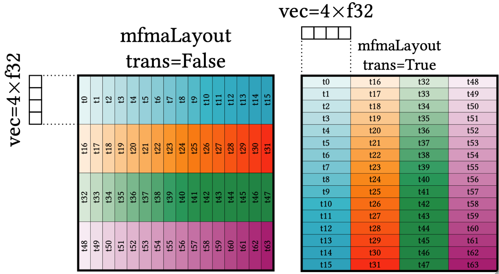
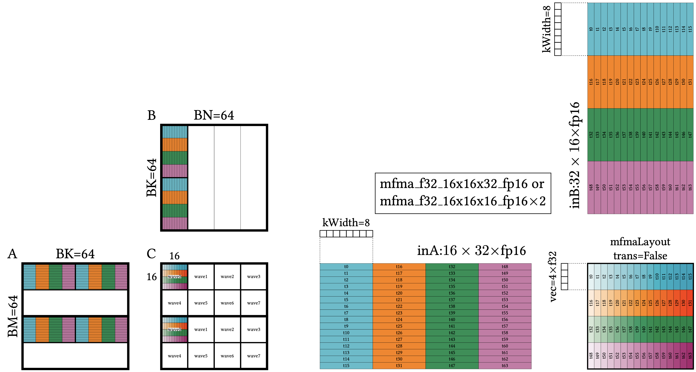
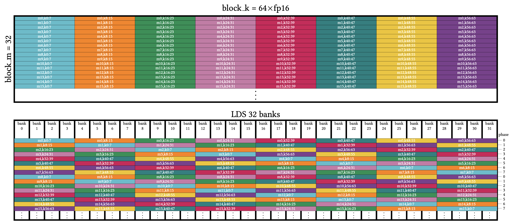
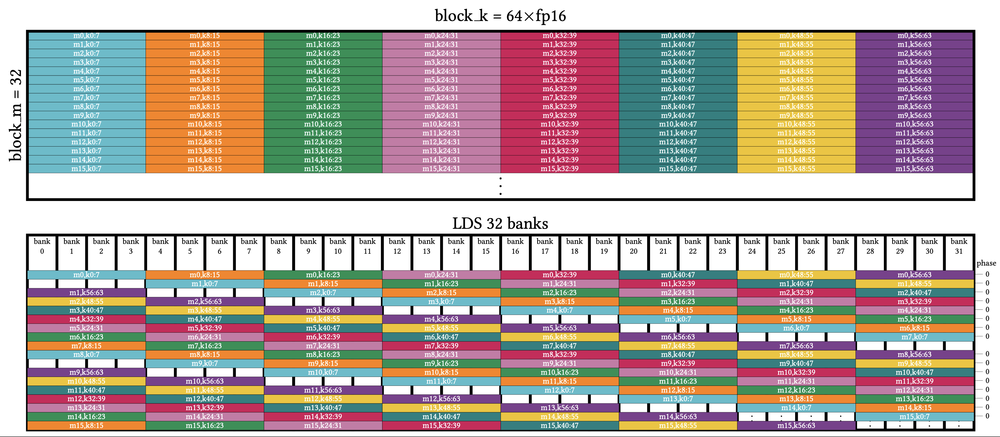

Hopefully the previous articles covering linear layout concepts and examples facilitate building a solid understanding of the core generic layer powering various Triton code generation lowering and optimizations. Now let’s turn our focus to those bespoke layouts, which we still consistently interact with when working on Triton compiler internals. Additionally, developers can directly program layouts with Gluon now; writing those bespoke layouts is generally more intuitive than linear layouts.
By bespoke layouts, I mean traditional layouts like blocked/shared/MMA layouts. In certain places they are also called legacy layouts. Given we still actively use them and there are no plans to deprecate them, I personally prefer calling them bespoke layouts, to emphasize the fact that each one of them is tailored towards a specific need.
Bespoke vs Linear Layouts
One would ask why we need two sets of layouts and what different purposes they serve, if any.
Chronologically, we only have those bespoke layouts at the beginning. They model key hardware tensor ownership patterns in a straightforward manner. They are easy to understand and get the job done for common cases. However, as the kernel becomes more and more complicated which invites more and more optimizations, their shortcomings start to become obvious—given each bespoke layout uses its own IR definition and underlying mechanism, we need more and more point to point conversion cases.
Starting with the general ttg.convert_layout operation we mentioned earlier as an
example, it can have different source and destination layouts.
Without a generic mechanism, we need to consider them separately and use different code paths,
which means solving a combinational problem in the space of
source layout (blocked, shared, MMA, etc.) * destination layout (blocked, shared, MMA, etc.) *
data exchange (intra-thread, intra-warp, inter-warp, etc.).
ttg.convert_layout serves as internal bridge inside the compiler for potential data ownership
exchanges—we insert it as long as we have a mismatch in the type system due to
layouts.
Such approach gives us localized compiler transformations so easier to manage.
On the flip side, it does mean that there can exist lots of redundant conversions; we would want
to optimize them away if possible.
Further, from the kernel’s perspective, we write at the block level and process n-D tensors.
It’s quite common to perform .permute(), .reshape(), and other shape manipulation
operations.
These operations conceptually bring no cost given they are just creating derivative “views”
of the original tensor without needing to really shuffle data in the hardware.
So we would like to optimize through them if possible when optimizing layout conversions.
For the compiler to realize the above, it needs to reason and compute how element ownership transfers throughout the kernel code, which would be hard if we don’t have a unified mechanism. Therefore linear layout was introduced as a generic underlying mechanism.
Genericity comes with a cost of higher cognitive burden though, as human minds are typically fond of vivid illustrations rather than terse theories.1 Especially now with Gluon, developers can directly program layouts to get precise control to overrule inefficiencies of compiler heuristics. So even as all the Triton compiler internals are transitioning to heavily rely on linear layouts for generic optimizations, bespoke layouts are still great complementary mechanisms. It’s like that we know all high-level programming languages are translated into assembly eventually, but we still prefer programming the former.
I think I digressed a bit already, but the above are good backgrounds. Without further ado, let’s discuss bespoke layouts.
Layout Traits and Attributes
The documentation for these layouts is embedded as descriptions in the TritonGPUAttrDefs.td
file.
The wording there is a bit formal but good to read through.
In general, there are two categories—distributed and shared layouts.
They are defined as TableGen attribute interfaces with a EncodingTrait suffix in their names.
Attribute interface is a mechanism for different attributes to support the same API interface,
like mixins in programming languages.
Among distributed layouts, those for representing tensor/matrix core unit layouts are special
enough to merit their own separate interface, named MmaEncodingTrait, for defining common methods
and processing collectively.
Various concrete layouts are defined as MLIR attributes, with an EncodingAttr suffix.
See the hierarchy in the following illustration:

One may wonder why defining layouts in such manner.
Triton uses MLIR’s tensor data type.
Using MLIR attributes to define layouts allows us to attach them to tensor as the encoding
attribute.
With this, we basically bolt the layouts on the MLIR type system and carry them in each operation
so we can reason and propagate them in relatively localized manner for optimizations as said in
the previous section.
Distributed Layouts
Distributed layout, as the name indicates, are meant for ownership patterns where different hardware units own different tensor elements. This is the case when we use registers to hold the data; it matches and reflects the fundamental hardware characteristics that registers are per-SIMD resources and only visible to their owning threads and warps.
A simplified flow of matmul is that we read data from global memory into registers and write to shared memory, and then read from shared memory to registers, and finally perform tensor/matrix core operation and write to global memory.2
If we’d like to design bespoke layouts to support this flow, we would need something to represent how to read/write from/to global memory, and how to manage shared memory, and how to arrange data in the manner as expected by tensor/matrix core units. The first is effectively blocked layout, and the third is various vendor-specific MMA layouts. The second we will come to in the Shared Layouts section.
Blocked layout
For global memory access, GPUs have stuck to the SIMT model longer than computation. While MMA was introduced since Volta in NVIDIA GPUs, it’s only since Hopper that we see Tensor Memory Accelerator (TMA).
Hardware needs
In the traditional SIMT model, each thread only read a few elements; we arrange threads into warps and then into CTAs3 to collectively progress the whole problem size. Although each thread uses its own global pointer so we can perform arbitrary gather/scatter style access, the hardware is really designed to be most efficient if all threads in the same warp collectively access consecutively with coalescing.
To describe the above ownership pattern, we would need to specify how many elements each thread is responsible for, how many threads per warp we have, how many warps per CTA, and so on. Additionally to achieve best performance, we need to arrange threads/warps in nested tiles to be consecutive. These are all semantics we want to directly bake into the definition of blocked layout, which reflects the current attribute definition.
Tensor situations
The above only specifies an element owning pattern of one “unit” though. When mapping to a concrete tensor, we would need to address some additional issues.
First is how to scale to the exact shape of the tensor. This is straightforward considering the need of consecutive arrangement for performance—we just continuously tile in a wrap-around manner until we cover the whole tensor4, with each tile called a repetition. This is actually the behavior for all distributed layouts.
For example, applying a blocked layout of ttgl.BlockedLayout(size_per_thread = [1, 8], threads_per_warp = [16, 4], warps_per_cta = [2, 2], order = [1, 0]) onto a (MxK =) 64x128xf16
tensor, we can use an awesome tool created by Lixun to visualize (including
all following illustrations):

There is a curious order bit in the above.
That’s the second issue we need to handle—given a 2x2 warps per CTA for example, there are
multiple ways we can arrange the warps.
So the definition we had thus far is not enough to pin down the exact distribution pattern.
Similarly for the thread arrangements in a warp.
To address this, we introduce the order to list dimension indices from fastest to slowest
varying.5
Applying ttgl.BlockedLayout(size_per_thread = [8, 1], threads_per_warp = [4, 16], warps_per_cta = [2, 2], order = [0, 1]) onto a (KxN =) 64x128xf16 tensor, we can see the different arrangements
for warps.
Although it’s not obvious from the plot, thread arrangements follow similar order pattern like warps
and they differ from the previous one too.

Pass conversions
Okay now we have a good mechanism to describe how we distribute a tensor in threads/warps/CTAs. We can then use it to optimize global memory access. This is performed in multiple steps. We know that Triton IR itself doesn’t concern layouts. When we convert to Triton GPU IR, we apply a default blocked layout with a default order (the innermost dimension is the fastest varying) consistent with MLIR in general. Then later we use the Coalesce pass to refine. Just pointing out the overall flow here to give more context on blocked layout. Details involved are another big topic I won’t dive into for now given the focus is on layouts.
As a side note, the fact that these bespoke layouts do not encode the tensor shape but auto “scale” at shape application time can cause subtle problems. Also, order only gives restricted representation power and it couples thread and warp arrangement. The former is a limitation of bespoke layout in general, while the latter is specific to blocked layout. Linear layout makes it better for both issues as it’s explicit about shapes by construction and flexible about different arrangements.
MMA layouts
Blocked layouts describe tensor element distribution patterns promoting efficient global memory access following the SIMT model. Before we are able to feed the data into tensor/matrix core units for computation, we need to rearrange to meet hardware layout requirements, given that they are not SIMT anymore and threads in a warp collectively own a tensor fragment. We touched on this part in the linear layout blog post.
All the three matrices involved in matmul have predefined element ownership patterns. Let’s start with the C matrix, which is captured as the MMA layouts, and then move on to A/B in the next section, which is captured as dot operand layout.
Due to the ad-hoc nature of tensor/matrix core units, the element ownership follows a vendor-specific exotic manner. Using AMD MFMA layout as an example, we have a version given the instructions may not be portable across generations. We have an instruction shape specifying the exact hardware intrinsic variant. These two fields pretty much determine what a warp unit tile (that is, a single MFMA intrinsic) looks like.
There is a transpose bit on the layout definition worth explaining.
It’s an optimization for cases like chained tl.dot ops and direct global writes.
Unlike NVIDIA MMA layouts, AMD MFMA layout for C matrix natively requires threads to own consecutive
elements along the M dimension, which is inconvenient if we want to feed one tl.dot’s result as A
matrix to following tl.dot, or directly write out to global memory.
The trick is to rely on $C^T = B^T A^T$ to compute the transpose.
Showing the V_MFMA_F32_16X16X16_F16 hardware intrinsic:

There is nothing to customize within a warp unit tile.
But we can specify how to nest further on top of it with tiles per warp and warp per CTA, like
other distributed layouts.
We can look at examples showing that together with dot operand layout, for the full picture of
tl.dot computation.
Dot operand layout
To describe the A/B matrix layout, we need to know which intrinsic we target. We can get such information by using the C matrix’s MMA layout as the parent layout. Then use an index to indicate whether it’s A or B matrix. That’s the main fields in dot operand layouts.
There is one additional kWidth bit that specifies the number of elements each thread loads
consecutively from shared memory.
Its existence gives us chances to optimize shared memory load with wider instruction.
If we look at V_MFMA_F32_16X16X16_F16, each thread only owns (16 x 16 / 64 =) 4 (called
as kBase here) f16 elements,
which is only 64 bits.
The widest shared memory access instruction allows 128 bits.
GPU hardware nowadays packs very powerful tensor/matrix core units, and the bottleneck is often
feeding data to them via memory.
So we want to optimize shared memory access via widest instruction.
We can set kWidth as 8 to read in 2x (called as kPack here) elements and issue two MFMA
instructions to consume them.
Given the following layout
c_layout = ttgl.amd.AMDMFMALayout(version = 3, instr_shape = [16, 16, 16],
transposed = False, warps_per_cta = [2, 4])
a_layout = ttgl.DotOperandLayout(parent = c_layout, operand_index = 0, k_width = 8)
b_layout = ttgl.DotOperandLayout(parent = c_layout, operand_index = 1, k_width = 8)
on a 64x64x64xf16 tensor:

Pass conversions
The MMA layout for C and associated dot operand layout for A/B are decided in the AccelerateMatmul
pass.
We run patterns on tl.dot ops there and decide on a MFMA intrinsic variant to use based off
precision and shape and other characteristics.
MMA layout and dot operand layout are created out of it accordingly, with ttg.convert_layout
bridging the type system.
This decision becomes the layout anchor for compute side. Together with the Coalesce pass, which decides the anchor for memory access side, we establish “boundaries” for layout propagation and resolution. The RemoveLayoutConversions pass would work inside this boundary to optimize.
Shared Layouts
Thus far we have discussed the layouts needed for global memory access and tensor/matrix core computation. Another major component we need to utilize well for high performance is shared memory.
Shared memory is visible to all threads in the CTA. We explicitly fetch data into shared memory when software pipelining with multiple buffers to hide memory latency. We can also implicitly use it to do layout conversions in Triton if the data exchange cannot be completed in an intra warp manner.
We want corresponding layout mechanisms to represent shared memory usage. One critical aspect it needs to handle well is avoiding bank conflicts for performance. Generally there are two ways to handle bank conflict, via swizzling or padding. Therefore, we have two important shared layout variants.
Swizzled shared layout
The previous article already explained the intuition and algorithm
of using swizzling to address bank conflict—for row #i, perform xor i when indexing.
Here we can directly focus on the layout mechanism to realize that.
In order to be flexible, the swizzling scheme is encoded with a few knobs:
vec: specifying how many elements are grouped together as a vector unitperPhase: specifying how many rows are in the same phasemaxPhase: specifying the max number of phases we have
There are a few examples in the description which are quite illustrative.
Overall they define a scheme on two most fast varying dimensions—order[0] being column, and
order[1] being row.
Given an element at (r, c), phase would be (r / perPhase) % maxPhase.
The swizzled column is ((c / vec) ^ phase) * vec + (c % vec).
For a 32x64xf16 tensor, we can achieve 32-bank conflict free with
ttgl.SwizzledSharedLayout(vec = 8, per_phase=1, max_phase=8, order=[1, 0]):

Padded shared layout
Initially swizzling is the only mechanism for shared layout bank conflict resolution.
It operates on indices with the xor operation, which nicely matches linear layout fundamentals
and it can cover all NVIDIA GPU needs.
Rationale
However, for AMD GPUs, certain hardware features makes it infeasible/inefficient to use swizzling
for handling bank conflict.
One such example is GLOBAL_LOAD_LDS_* intrinsics in AMD CDNA4 architecture.
It directly writes data from global memory to shared memory without going through
registers, which is nice to reduce register pressure.6
However, these intrinsics use one single scalar register to specify the base shared memory
location for the whole warp, mandating the full warp to perform consecutive writes.
We cannot perform the scatter-style writes needed for swizzling.
There are tricks to work around this by effectively “reverse” the swizzle scheme onto the global pointers, but that comes as overhead given we need to exchange global pointers among threads. It’s more natural to use padding for avoiding bank conflict for such cases. Therefore we introduced it and for now it’s only used for the AMD backend.
Definition
The padded shared layout is defined to take a list of interval-padding pairs; we insert the corresponding padding amount after every interval elements. Multi interval-padding pairs are supported for flexibility of multi-tiered padding schemes and they compose in an additive manner.
If we have a shared memory allocation of MxN shape and each thread handles v consecutive
elements, a general algorithm is to check how many consecutive banks v occupies and make sure
we pad an amount of that many banks for every row of N elements.
For example, using the same 32x64xf16 tensor and vector size of 8, we can pad (8 * 2 =) 16 bytes
(which is 4 banks) after every (64 * 2 =) 128 bytes.
Padded shared layout specifies interval-padding values as number of elements.
So it would be
ttgl.PaddedSharedLayout.with_identity_for(padding_interval_pairs = [[64, 8]], shape = [32, 64], order = [1, 0]) to give us 32-bank conflict free:

Linear layout interactions
One big difference compared to swizzled shared layout, other than that we waste a bit of shared
memory capacity due to padding, is that the key operation of padding is standard +, not xor.
That breaks linear layout fundamentals, if you recall what we discussed earlier in the
earlier blog post.
Therefore, padded shared layout cannot be directly converted to linear layout and enjoy the same
level of genericity when doing optimizations.
We might think it’s a fine trade-off given that shared memory is a special unit which we typically only involve when reading and writing into it, unlike with registers we can perform various kinds of optimizations and would want to propagate layouts across.
Though if thinking a bit deeper, we can see that padding only concerns the final physical shared memory allocation with 1-D offsets. We need to consider padding amounts when performing allocation, and adjust indexing to accommodate those “holes” when composing the final linearized offsets into the allocation. Such steps are isolated within converting to LLVM and the information needed are already encoded as the interval-padding pairs.
Before that, when we work at the higher Triton GPU layer, we operate on logical shared memory “views” with n-D indexing. Here we can still leverage all the (linear) layout facilities to reason about transformations, like transpose and reshape, given they only concern about the n-D logical view and element index remapping.
Actually, even padded shared layout itself carries a linear component that can remap from the 1-D shared memory offset to logical n-D tensor elements, to give more flexibility to achieve certain optimization goals. This linear remapping component is encoded in the linear layout mechanism and plays well there.
Overall the n-D logical indexing vs 1-D physical offset padding is a nice conceptual boundary to reason about and leverage the high level transformations and isolate the “breaking” aspects of padded shared layout to only allocation and final indexing calculation when converting to LLVM.
Final words
Thanks for following through till the end! This blog post introduced the overall bespoke layout hierarchy, the pros and cons vs linear layout, and then explained some key variants. There are some layouts that I omitted, like slice layout for broadcast/reduction, linear encoding layouts for exposing linear layout directly into Triton GPU IR, and various vendor-specific layouts. Those are more targeted and specialized and we can pick up later.
-
Weirdly though, if you really deeply think linear layout through, you may argue that it’s cognitively simpler than bespoke layouts! ↩︎
-
This might be anchoring on earlier GPU generations without fancy async features, but it helps us to build up the motivation and intuition of bespoke layouts. ↩︎
-
CTA is an NVIDIA term. See this section for translations. ↩︎
-
If the tensor’s shape is smaller than the “unit”, it becomes tricker—we “broadcast” there. ↩︎
-
Note that the dimensions themselves are ordered from left to right in ascending manner. For example, for
b x m x n,bis dim#0, andmis dim#1, andnis dim#2. ↩︎ -
AMD CDNA3 architecture also has some
GLOBAL_LOAD_LDS_*intrinsics, but it’s missing wider variants like*_DWORDx4so less usable. ↩︎